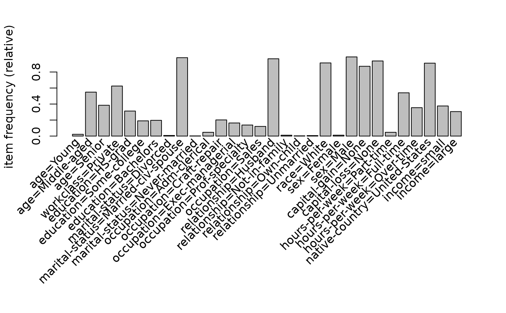

Provides the method predict() for itemMatrix (e.g.,
transactions). Predicts the membership (nearest neighbor) of new data to
clusters represented by medoids or labeled examples.
Usage
predict(object, ...)
# S4 method for class 'itemMatrix'
predict(object, newdata, labels = NULL, blocksize = 200, ...)Arguments
- object
clustered examples or medoids stored as an itemMatrix.
- ...
further arguments passed on to
dissimilarity(). E.g.,method.- newdata
an itemMatrix containing the objects to predict labels for.
- labels
a vector containing one label for each row in
object. IfNULL, the row numbers ofobjectare used.- blocksize
approximate maximum memory, in MB, used for the cross-dissimilarity matrix. Reducing
blocksizelowers peak memory use but can increase run time.
Value
A vector with one predicted label per row of newdata. Its values
come from labels (or from the row numbers of object when labels = NULL).
Details
object and newdata must use compatible item coding (the same items in the
same order). For each row in newdata, the label of the least dissimilar row
in object is returned. Ties are resolved by max.col() and may therefore be
selected at random.
See also
Other proximity classes and functions:
affinity(),
dissimilarity(),
proximity-classes
Examples
data("Adult")
## sample
set.seed(1234)
small <- sample(Adult, 500)
large <- sample(Adult, 5000)
## cluster a small sample and extract the cluster label vector
d_jaccard <- dissimilarity(small)
hc <- hclust(d_jaccard)
l <- cutree(hc, k = 4)
## predict labels for a larger sample
labels <- predict(small, large, l)
## plot the profile of the 1. cluster
itemFrequencyPlot(large[labels == 1, itemFrequency(large) > 0.1])
